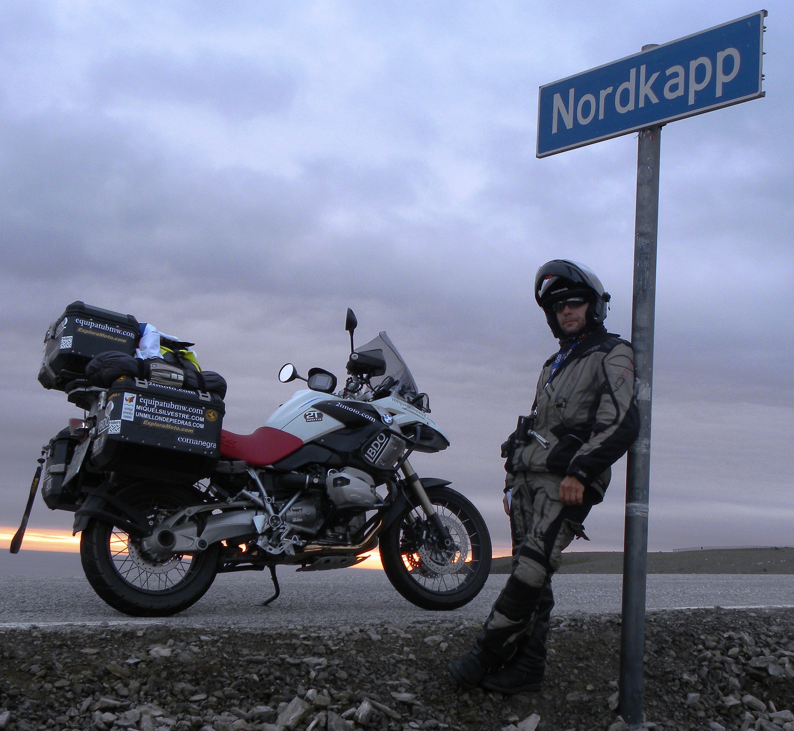
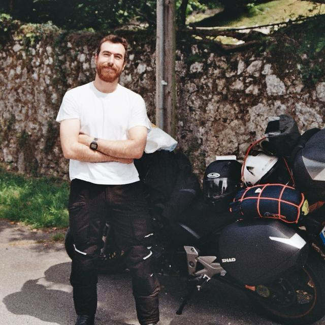
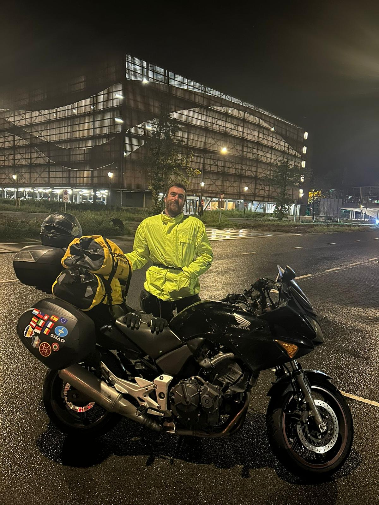

Desde casa.
Hacia el norte.
El viaje empieza en Gijón y, de momento, en la imaginación. El destino es Cabo Norte; la primera opción, mi Honda CBF 600.
Un destino por alcanzar
Mi viaje soñado es llegar a Cabo Norte saliendo desde Gijón, desde casa. Todavía no es una crónica ni un recorrido completado: es una idea que me gustaría convertir en un viaje real.
Por eso esta página está escrita en futuro. No hay una fecha cerrada, una lista de alojamientos ni una colección de lugares visitados. Hay un punto de partida, un destino y las ganas de unirlos por carretera. El recorrido concreto pertenece a la preparación que todavía queda por hacer.

Dos maneras de hacer el viaje
La primera opción es mi Honda CBF 600. Viajar en moto forma parte de mis aficiones, así que es natural que la imagine como compañera de un recorrido así. El proyecto inicial de esta página nace de esa idea: un viaje en moto hacia Cabo Norte.
También contemplo hacerlo en mi coche, un Mercedes SLK R170 230K azul. No es una decisión tomada. Son dos posibilidades para un mismo destino, con formas distintas de vivir la carretera y de organizar lo que llevaría conmigo.
Gijón como punto de partida. Cabo Norte como horizonte.
Viajar en moto
Antes de ese viaje soñado están las salidas y las paradas que ya forman parte de mi relación con la carretera.


El viaje antes del viaje
Antes de salir habrá que decidir el tiempo disponible, el recorrido, las paradas y cuál de los dos vehículos encaja mejor. No quiero dar por resuelto lo que todavía forma parte del sueño. Esta página recoge la intención y deja espacio para que el plan madure.
Los relatos de otros viajeros pueden acompañar esa preparación. Charly Sinewan es una de las referencias que me interesa considerar para un podcast de viajes: una manera de escuchar historias de carretera mientras pienso en la mía.
Lo que ya está claro es el origen de la idea. Me gustan los coches y los viajes en moto, y Cabo Norte representa un destino al que me gustaría llegar por mis propios medios. Algún día esta página podrá contar cómo fue; hoy cuenta por qué está entre mis planes.
Long Way Round
Un tráiler para acompañar esta afición por los viajes en moto y las ganas de salir a la carretera.